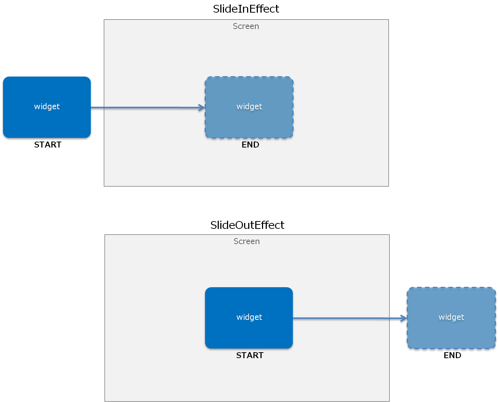
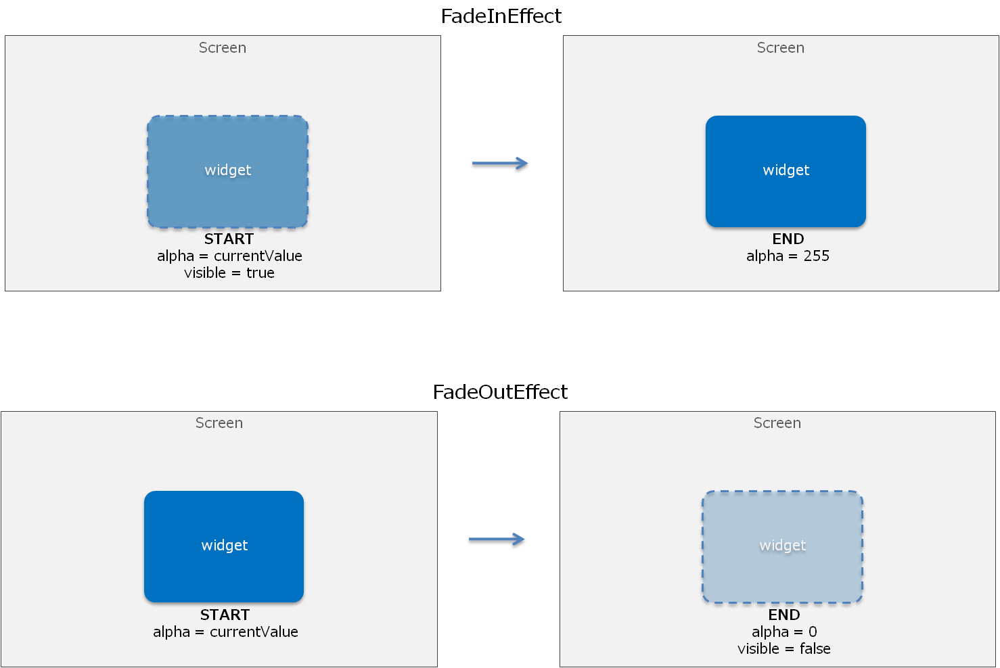
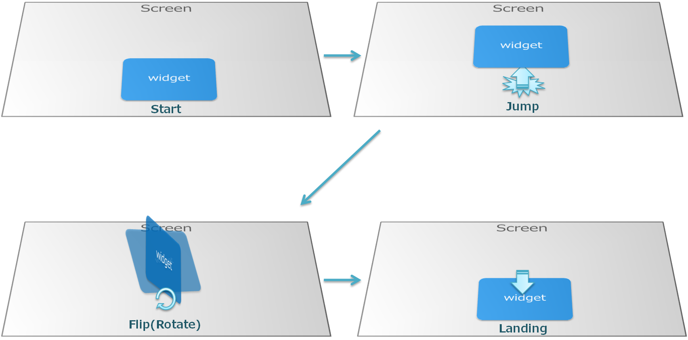
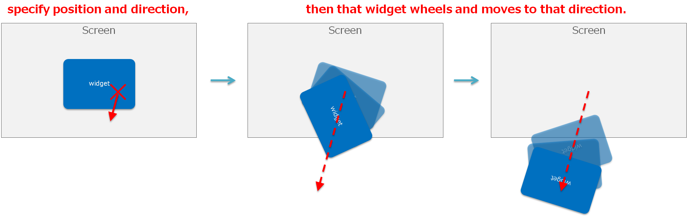
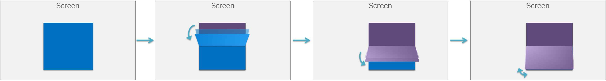

This chapter provides an overview of and describes how to use the Effect and Transition classes. Also refer to the catalog samples.
Contents
Effect is a class for assigning slide animation and fade-in production effects for individual widgets positioned in a scene.
Effect can be used as shown below.
SlideOutEffect effect = new SlideOutEffect(this, 300); effect.EffectStopped += HandleEffectEffectStopped; effect.Start();When the Start() method of an Effect object is called, that Effect object is registered to UISystem.
UISystem performs update processing of the registered Effect object when UISystem.Update() is called. When each effect reaches the termination condition, the EffectStopped() termination handler of the effect is called, and the effect is unregistered from UISystem. Note that the Dispose() method is not explicitly called for the effect at this time.
Similarly, even when the Stop() method is explicitly called for the effect, the EffectStopped() termination handler is called and the effect is unregistered from UISystem.
An Effect class can also be independently created and customized. The following describes the effects provided as standard.
SlideInEffect is an effect that moves a specified widget from off the screen to a position specified by the X and Y properties (Figure 1). SlideOutEffect is an effect that moves a specified widget from a position specified by the X and Y properties to off the screen (Figure 1). When the Visible property is false, it is changed to true and the effect is executed. The animation curve at the time the widget is moved can be changed.
SlideInEffect slideInEffect = new SlideInEffect(); slideInEffect.Start();Figure 1 SlideInEffect and SlideOutEffect
These are effects that perform fade-in and fade-out (Figure 2). The Alpha property transitions from the current value to 255 or 0. For FadeInEffect, the current Visible property is set to true. For FadeOutEffect, when the effect is terminated, the Visible property is set to false and the Alpha property is reset to 255.
Figure 2 FadeInEffect and FadeOutEffect
This effect enlarges or reduces a widget to the specified zoom ratio (Figure 3). The zooming time and interpolation function can be specified.

Figure 3 ZoomEffect
This effect, which can be specified for the two widgets currentWidget and nextWidget, causes currentWidget to jump to the foreground, rotate, and then switch to nextWidget (Figure 4).
Figure 4 JumpFlipEffect
This effect causes a widget off the screen at the top to slide to the specified position (Figure 5). After bouncing somewhat, as if it were a bungee jump, the widget comes to rest at the specified position. The amount of bounce can be adjusted using the Elasticity value. This can be used when displaying a dialog.

Figure 5 BunjeeJumpEffect
This effect causes a specified widget to tilt and then move as if falling (Figure 6). The direction in which the widget falls can also be specified. A dialog displayed with BunjeeJumpEffect can be moved off the screen with TiltDropEffect for an interesting effect.
Figure 6 TiltDropEffect
This effect, which can be specified for the two widgets currentWidget and nextWidget, causes currentWidget to rotate at the horizontal axis and nextWidget to appear from behind, as if it were a flip clock (Figure 7). This can be used for clocks, text display, picture slide shows, and other applications.
Figure 7 FlipBoardEffect
Transition is a class for assigning production effects when switching scenes.
Transition can be used as shown below.
Scene nextScene = new Scene(); CrossFadeTransition transition = new CrossFadeTransition(); transition.TransitionStopped += HandleTransitionStopped; UISystem.SetScene(nextScene, transition);It can also be used as shown below.
Scene nextScene = new Scene(); CrossFadeTransition transition = new CrossFadeTransition(); transition.TransitionStopped += HandleTransitionStopped; nextScene.Transition = transition; UISystem.SetScene(nextScene);A Transition class can also be independently created and customized. The following describes the transitions provided as standard.
This transition has the same effect as SlideInEffect and SlideOutEffect.
This transition moves in the new scene while pushing out the currently displayed scene.
This transition fades in the new scene while fading out the currently displayed scene. Use the NextSceneForward property to set whether the currently displayed scene or the new scene comes to the foreground.
This transition has the same effect as JumpFlipEffect. It causes the current scene to jump to the foreground, rotate, and then switch to the new scene.
This transition has the same effect as BunjeeJumpEffect.
This transition has the same effect as TiltDropEffect.
This transition has the same effect as FlipBoardEffect.